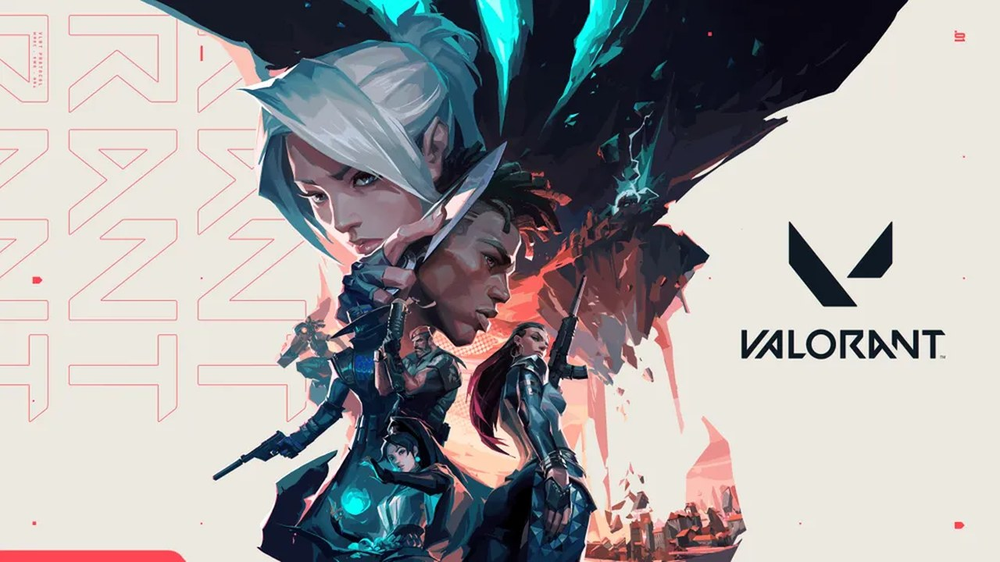

기준일 2026년 10월 7일 (수)커버기간: 10/6(화) 오전 – 10/7(수) 오전인벤 07:34 글까지 수집
핵심오버워치 5시즌이 열린 직후인 10/7 오전, 인벤에 시메트라 일시 비활성화 공식 안내가 올라왔습니다.스팀기어스 오브 워: 이데이가 한국 시각 10/7 0시에 정식 출시됐습니다. 평가 3,972개 중 긍정은 3,090개로 약 78%입니다. 토론 활성 주제는 어제 1,313건에서 1,723건이 됐습니다.국내인벤 오버워치 자유게시판 최근 40글 중 시메트라 제목이 3건입니다. 조사 기간은 10/6 19:00부터 10/7 07:34까지입니다. 패치노트 글은 03:20에 게시돼 조회 502회입니다.일정VCT 챔피언스 상하이 플레이오프가 오늘 10/7에 시작합니다. Dot Esports 보도로는 8강 대진에 NRG 대 T1, Vitality 대 농심 레드포스가 있습니다.
측정 주의스팀 토론과 평가는 한국 시각 오전 7시대에 직접 읽었습니다.수요일 판이라 최근 24~48시간을 묶었습니다.인벤 오버워치 글은 모바일 목록으로 읽어 최신 글이 07:34입니다.
근거 표기KR·기사국내 매체글로벌·기사해외 매체커뮤니티원문 직접 확인공식공식 공지지표수치국내 반응 미확인국내 소스 미확인
게임
이벤트 / 업데이트
날짜
유형
커뮤니티 반응 · 관전 포인트
오버워치5시즌 개막과 시메트라
인벤 최근 40글은 오늘 07:34까지 이어집니다.5시즌 글과 넥슨 공지, 패치노트가 새벽에 올라왔습니다.콜라보는 웹소설 "나 혼자만 레벨업"이 원작입니다. 기간은 10/7~10/21이고 전설 스킨은 5종입니다.
10/7글 40건
시즌5 · 시메트라
커뮤니티공식지표 인벤 자유게시판 최근 40글을 모바일 목록으로 봤습니다.① 시메트라 비활성화 안내는 조회 256회입니다. 본문이 이미지라 사유를 확인하지 못했습니다. "시메 미쳤네"에는 의견 4개가 달렸습니다.② 판정·접속 "히트스캔 면적 크기가 작아진 패치"는 조회 220회입니다. "뭐야 나만 접속안되냐"에는 답글 1개가 붙었습니다.③ 5시즌 공지 패치노트는 조회 502회입니다. 콜라보 공지는 293회 읽혔습니다.의견은 시메트라와 판정 쪽으로 몰렸습니다.인벤 자유게시판 모바일 목록 · 시메트라 안내 글 · 10월 7일 패치노트 글 · 넥슨 콜라보 공지 글

발로란트VCT 플레이오프 개막
플레이오프는 10/7~10/18, 8팀 더블 엘리미네이션입니다.10/7~10/8 상위 8강 4경기는 모두 Bo3입니다. 하위 결승과 결승은 Bo5로 치러집니다.우승 상금은 100만 달러이고 총상금은 225만 달러입니다.
10/7~10/18
e스포츠 · 대회
글로벌·기사커뮤니티지표 아카라이브 발로란트 채널 최근 15글을 확인했습니다.① 글 수 10/2~10/6에 걸쳐 하루 3건 안팎입니다. 추천은 모두 1개 이하입니다.② 대회 "티원 경기 누가 이길까"는 10/4에 108회 읽혔습니다. 대진 글은 같은 날 올라와 조회 93회를 받았습니다.③ 최신 글 "발로 음성챗 나만 안됨?"은 10/6에 40회 읽혔습니다. 답글은 2개입니다.개막 직전 채널은 비교적 조용했습니다.Dot Esports 상하이 · 아카라이브 발로란트
PUBG: 블랙 버짓블랙 버짓 개발 종료 후속
인벤은 10/1 12:50에 개발 종료를 단독 보도했습니다. 만든 곳은 펍지 스튜디오 암스테르담입니다.클로즈 알파는 2025년 12월과 2026년 6월에 있었습니다.크래프톤은 "플레이어 경험을 중심으로 내린 결정"이라고 밝혔습니다.
10/1~10/7관련 글 0건
개발 종료 보도
KR·기사커뮤니티지표 인벤 배그 자유게시판 최신 15글을 확인했습니다.① 언급 기간은 9/23부터 10/6 15:00까지입니다. 블랙 버짓을 언급한 제목은 한 건도 없습니다.② 상위 9/24 글이 719회 읽혀 가장 많았습니다. 10/1 "배그 VPN쓰면 수준 내려간다는데"는 542회입니다.③ 루리웹 메인 신설 게시판 14건 중 슈터는 PUBG: 데드넷 하나입니다. 블랙 버짓 전용 공간은 그 안에 없습니다.보도 이후 후속 글은 두 곳 제목에서 찾지 못했습니다.인벤 단독 보도 · 배그 자유게시판 · 루리웹 신설 게시판
04
글로벌 포커스
근거는 스팀 커뮤니티 토론·리뷰 원문과 SiegeGG·Dot Esports·Liquipedia 등 전문지, 그리고 공식 패치노트입니다.
오늘 연 해외 커뮤니티확인기어스 오브 워: 이데이 일반 토론 목록오전 확인 · 활성 1,723건 · 첫 화면 15건 중 5건이 태그·깃발·성별 제목확인에이스 컴뱃 8 일반 토론 목록오전 확인 · 활성 1,207건 · 오류·성능·접속·특전 제목 9건확인워독스 일반 토론 목록오전 확인 · 활성 1,851건 · 문제 신고 방 2,777건 · 제재 이의 방 456건확인스팀 평가 집계 조회: 이데이 전체 3,972개 중 약 78%, 한국어 30개 중 22개 긍정 · 에이스 컴뱃 8 한국어 419개 중 약 79% · 워독스 한국어 746개 중 약 62% · 아크 레이더스 한국어 4,184개 중 약 78%미열람아크 레이더스 토론 · 배틀필드 6 · 마블 라이벌즈 · 레인보우 식스 시즈 · CS2 · 에이펙스 · 델타포스 · 데스티니 2 · THE FINALS축 없음발로란트와 서든어택은 스팀 미등록
게임
이벤트 / 업데이트
날짜
유형
커뮤니티 반응 · 관전 포인트
기어스 오브 워: 이데이정식 출시 첫날
스팀 전체 3,972개 중 긍정 3,090개로 약 78%입니다. 어제는 3,458개 기준 78%였습니다.한국어 평가는 30개 중 22개가 긍정이며 약 73%입니다. 표본은 작습니다.활성 토론은 1,723건으로 어제 1,313건보다 늘었습니다.
10/7출시 10/7
출시 · 논쟁
커뮤니티지표 첫 15건은 모두 방금 전부터 6분 전 사이에 올라왔습니다.① 논쟁 태그·깃발·성별을 다룬 제목이 5건입니다. "What happened to the LGBT Tag?"의 답글은 0개입니다.② 동접"22k peak players so far."에는 70개의 댓글이 붙었습니다. Insider Gaming은 선행 접속 첫날 최고 동접을 20,374명으로 전했습니다. 기사는 Gears 5의 스팀 역대 기록 10,196명을 넘었다고 적었습니다.논쟁 제목이 첫 화면 15건의 3분의 1을 차지합니다.토론 목록 1,723건 · Insider Gaming 동접
에이스 컴뱃 8출시 6일째
10월 2일에 출시돼 6일째입니다. 한국어 419개 중 332개가 긍정이며 약 79%입니다.전체는 조회값 8,046개 중 6,031개로 약 75%입니다. 어제 상점 표기 13,291개와 집계가 달라 비교하지 않습니다.활성 토론은 1,207건입니다.
10/7출시 10/2
신작 · 평가
커뮤니티지표 첫 15건은 방금 전부터 19분 전 사이에 올라왔습니다.① 환불"Refunded"는 34개의 답글을 받았고 올라온 지 얼마 안 된 글입니다.② 오류"Crashing during Cutscenes"는 의견 67개로 집계됩니다. 로딩 제목 "Exceedingly long loading times."에는 19개가 붙었습니다.③ 런처"Ace Combat Zero separate launcher????"에 10개의 댓글이 달렸습니다.오류·성능·접속·특전 문의 제목이 15건 중 9건을 차지합니다.토론 목록 1,207건 · 한국어 상점
워독스앞서 해보기 28일째
9월 11일에 앞서 해보기를 시작해 오늘 28일째입니다. 한국어 746개 중 465개가 긍정이며 약 62%입니다.전체는 102,727개 중 77,367개로 약 75%입니다. 활성 토론은 1,851건이고 문제 신고 방은 2,777건입니다.
10/7시작 9/11
앞서 해보기 · 팀 시스템
커뮤니티지표 최다 일반글은 방금 전에 올라왔습니다.① 팀 시스템"WARDOGS Is a Joke Its Team System Is Even Worse"는 481개의 답글을 받았습니다.② 부정행위"So many cheaters in this game"은 35분 전에 올라왔고 의견은 123개입니다. 치트를 다룬 제목은 첫 15건 중 2건입니다.③ 하위 방 문제 신고는 2,777건, 제재 이의는 456건으로 집계됩니다. 고정글 Linux 호환은 2,640개의 댓글을 모았습니다.반응은 팀 시스템 글이 치트 글보다 많습니다.토론 목록 1,851건 · 한국어 상점
아크 레이더스평가 수치 기준
한국어 평가는 4,184개 중 3,284개가 긍정으로 약 78%입니다. 어제는 4,181개였습니다.전체는 418,195개 중 341,753개로 약 82%입니다.PvE 전용 베타는 10월 13~20일입니다. Beebom 보도이며 어제 판에서 인용했습니다.
10/13~10/20베타
베타 · 예고
글로벌·기사지표 이 행은 스팀 평가 수치만 근거로 씁니다. 토론 목록과 국내 커뮤니티 개별 글은 읽지 못했습니다.① 한국어 평가 4,184개 중 3,284개가 긍정으로 약 78%입니다. 어제 4,181개보다 3개 늘어 증가는 작습니다.② 전체 평가 418,195개 중 341,753개가 긍정으로 약 82%입니다. 비율은 한국어보다 높습니다.커뮤니티 반응에 대한 해석은 보류합니다.Beebom PvE 베타 · 한국어 상점
05
신작 출시·발표
최근 나온 슈터와 곧 나올 슈터, 새로 공개된 이름을 한 표에 모읍니다. 날짜는 IGDB 캐시를 스팀 상점과 보도로 대조했습니다. 오늘은 새로 공개된 슈터를 확인하지 못했습니다.
게임
상태
날짜
개발 · 배급
관심 신호
링크
워독스 (WARDOGS)앞서 해보기 28일째
출시
09.11한국어 상점 기준
Bulkhead · Team17
한국어 평가 746개 중 62% · 토론 1,851건 · 시즌2 10/15는 Dexerto 위키 기준
IGDB 항목 22건 가운데 날짜를 대조한 것은 볼트건 2·마이코펑크 2건이며 어긋난 날짜는 0건입니다. 오늘 새로 공개된 슈터는 확인하지 못했습니다
—
06
신작 동향
출시 10/07한국어 표본 30개
신작 슈터 · 기어스 오브 워: 이데이
기어스 오브 워 이데이가 한국 시각 0시에 출시됐습니다.
스팀 전체 3,972개 중 3,090개가 긍정 약 78%입니다.한국어는 30개로 표본이 작고 22개 약 73%가 좋게 봤습니다.토론 활성 글은 1,723건이며 어제는 1,313건이었습니다.
토론 첫 15건 중 5건이 태그·깃발·성별 논쟁 제목입니다. 가장 많은 답글은 "Lol at all the insecure snowflake crybabies" 149개입니다.Insider Gaming 기준 선행 접속 첫날 스팀 최고 동접은 20,374명입니다. 한국어 커뮤니티 반응과 공식 입장은 열어 보지 못했습니다.우리는 국내 반응부터 직접 확인하고 응대 기준을 정해야 합니다.
한국어 419개 중 332개가 긍정 약 79%입니다.토론 활성 글은 1,207건이고 어제와는 비교하지 않았습니다.첫 15건 중 9건이 오류·성능·접속·특전 문의 제목입니다.
답글이 가장 많은 글은 "Crashing during Cutscenes"이며 67개를 받았습니다. 접속 글 "Не работает онлайн"은 36개로 뒤를 잇습니다.방금 전 "Refunded" 글은 34개의 답글을 받았습니다.우리는 오류와 접속 문의 응대 문구를 오늘 먼저 정리해야 합니다.
한국어는 746개 중 465개가 긍정 약 62%입니다.전체 평가는 102,727개 중 약 75%가 좋게 봤습니다.문제 신고 방은 2,777건, 제재 이의 방은 456건입니다.
최다 답글은 "WARDOGS Is a Joke Its Team System Is Even Worse"의 481개입니다. 이어서 "So many cheaters in this game"은 123개를 받았습니다.시즌2 초기화는 Dexerto 위키 기준 10/15이며 공식 안내문은 못 읽었습니다.우리는 팀 시스템과 치트 문의 응대안을 신고 방 부하와 함께 점검해야 합니다.
무엇이토론 활성 글은 1,723건으로 어제 1,313건보다 늘었습니다. 첫 15건 중 5건이 태그·깃발·성별 논쟁 제목입니다.확인된 사실은 목록의 숫자뿐입니다. 본문을 읽지 못해 논쟁의 실제 내용은 알 수 없습니다. 환불 요구가 있는지도 이번 재료에서는 확인하지 못했습니다.
맥락가장 많은 답글은 "Lol at all the insecure snowflake crybabies"의 149개입니다. "My Chuds, WE WON"은 111개를 받았습니다."What happened to the LGBT Tag?"의 답글은 0개입니다. "MIcrotransactions In Full Price Game"은 7개에 그칩니다.Insider Gaming 기준 선행 접속 첫날 스팀 최고 동접은 20,374명이었습니다.
우리 운영 교훈
제목 수치만으로 환불이나 태그 논쟁의 크기를 단정하지 않습니다. 첫 15건 중 5건이라는 사실만 보고합니다.
답글이 많은 글과 문제가 큰 글은 다릅니다. 149개가 달린 글이 대응 사안인지는 본문을 읽고 판단합니다.
국내 커뮤니티는 열지 못했습니다. 한국어 평가 30개는 표본이 작아 방향만 참고합니다.
MID · 워독스 팀 시스템·치트 글
워독스는 팀 시스템과 치트 글이 신고 방 부하로 이어질 수 있습니다.
무엇이앞서 해보기 28일째 토론 활성 글은 1,851건으로 집계됩니다. 문제 신고 방은 2,777건, 제재 이의 방은 456건입니다.최다 답글은 "WARDOGS Is a Joke Its Team System Is Even Worse"의 481개입니다. 치트 글 "So many cheaters in this game"은 123개를 받았습니다. 이 둘이 신고 방 건수와 이어지는지는 확인하지 못했습니다.
맥락고정글 0.1.2 패치에는 답글 446개가 달렸습니다. "Ban the people using grenade launchers from heli"는 53개입니다.한국어는 746개 중 465개가 긍정 약 62%입니다. 전체 평가는 102,727개 중 약 75%가 좋게 봤습니다.시즌2 초기화는 Dexerto 위키 기준 10/15이며 공식 안내문은 못 읽었습니다.
우리 운영 교훈
팀 시스템 글에는 답글 481개가 달렸습니다. 불만의 내용을 읽고 유형별로 나눕니다.
치트 글은 123개이고 신고 방은 2,777건입니다. 두 숫자가 같은 문제인지는 따로 확인합니다.
제재 이의 방 456건은 건수만 확인했습니다. 시즌2 초기화 전에 내용을 살필 순서를 정합니다.
MID · 오버워치 5시즌 시메트라 비활성화
오버워치 5시즌 첫날 시메트라 일시 비활성화 사유는 읽지 못했습니다.
무엇이공식 글 "공식) 시메트라 일시 비활성화 안내"는 05:04에 올라왔습니다. 이 글은 조회 256회, 추천 2개, 댓글 1개입니다. 본문이 이미지라 비활성화 사유는 읽지 못했습니다."시메 미쳤네"는 04:53에 조회 321회, 댓글 4개입니다. "지우#31483 시메궁 악용 유저"는 05:14에 추천 3개이고 274회 읽혔습니다.
맥락"공식) 10월 7일 패치노트"는 03:20에 올라와 조회 502회입니다. 요약에는 로드호그 재설계, 솜브라 지원 전환, 히트박스와 히트스캔 크기 조정이 있습니다.콜라보 "나 혼자만 레벨업"은 넥슨 공지 요약 기준 10/7부터 10/21까지입니다."히트스캔 면적 크기가 작아진 패치"는 04:02에 조회 220회입니다. "뭐야 나만 접속안되냐"는 03:15에 댓글 1개입니다.
우리 운영 교훈
안내문 본문은 이미지라 읽지 못했습니다. 이유를 추측해 답하지 않고 256회 조회된 공식 글만 가리킵니다.
접속 불만 글은 댓글 1개입니다. 장애로 단정하지 않고 같은 글이 늘어나는지 봅니다.
악용 유저 글은 추천 3개입니다. 사실로 확정하지 않고 글 내용만 전달합니다.
08
CM 액션 제안
1
기어스 오브 워 이데이 출시 첫날 응대 기준을 정합니다
첫날이라 오늘 오전에 세 가지를 처리합니다. ① 태그·깃발·성별 논쟁 글에는 의견을 얹지 않고 사실만 안내하는 원칙을 세웁니다.② 한국어 평가 30개는 표본이 작아 한국어 커뮤니티를 직접 읽습니다.③ 환불 문의가 오면 접수 문구만 준비합니다. 공식 입장은 열지 못했으니 확정 표현은 쓰지 않습니다.
2
시메트라 안내문 사유와 워독스 신고 방 부하를 확인합니다
오버워치는 공식 글 이미지를 열어 사유를 확인합니다. 그전 문의에는 일시 비활성화라는 사실만 안내합니다.워독스는 문제 신고 방 2,777건과 제재 이의 방 456건을 살핍니다. 팀 시스템과 치트 글의 내용을 유형별로 나눠 봅니다.
유의사항방법스팀 토론 목록과 국내 게시판을 오전 7시대에 직접 읽었습니다.캐시인벤 PC 주소는 어제 스냅샷을 돌려줘 모바일 주소를 썼습니다. 배그 쪽은 10/6 15:00까지의 글이 최신이었습니다.집계에이스 컴뱃 8과 워독스는 오늘 조회한 평가 수가 어제 상점 표기보다 적었습니다. 그래서 어제 수치와 견주지 않았습니다.날짜IGDB와 대조한 볼트건 2와 마이코펑크는 어긋남이 없었습니다. 어제 한국어 상점 표기 10/15와는 하루 차이입니다.미확인이데이 국내 커뮤니티, 시메트라 안내문 이미지, 워독스 시즌2 공식 안내문, 핫벤 수치는 읽지 못했습니다. VCT 경기 시각은 다시 보지 않았습니다.출처5시즌 콜라보 기간과 패치 요약은 인벤 글을 요약 도구로 읽은 값입니다. 아크 레이더스 PvE 베타는 어제 판 인용입니다.